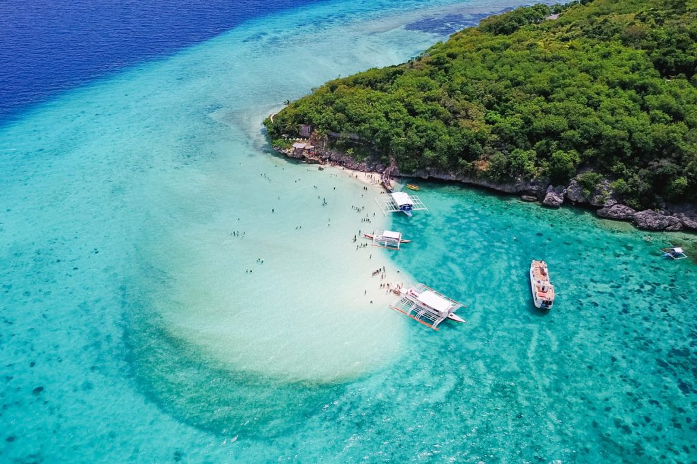
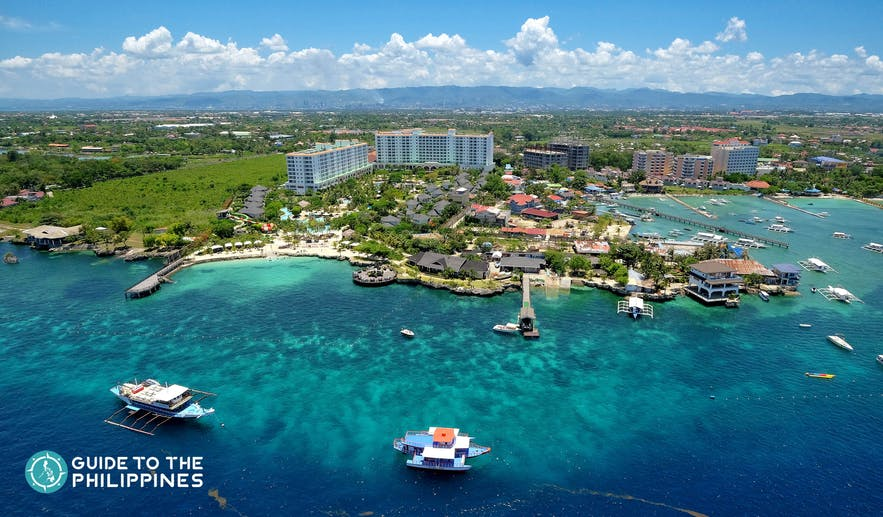
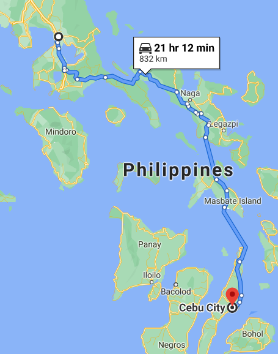
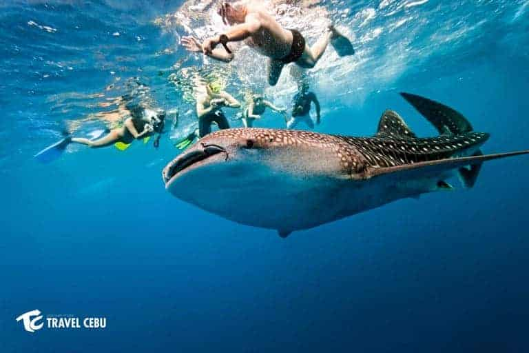
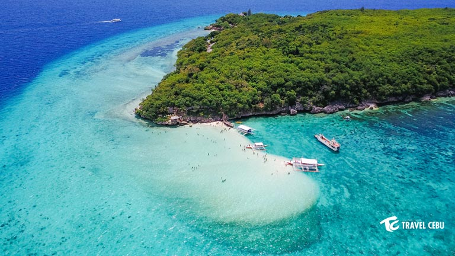
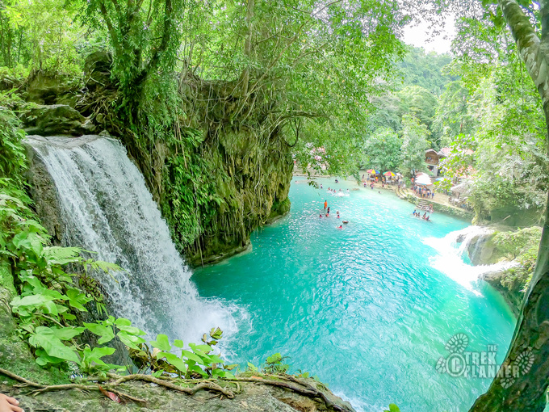

Cebu

Cebu (/sɛˈbuː/; Cebuano: Sugbo)
is a province of the Philippines located in the Central Visayas (Region VII) region, and consists of a
main island and 167 surrounding islands and islets. Its capital is Cebu City, "the Queen City of the
South", the oldest city and first capital of the Philippines, which is politically independent from the
provincial government.

The Cebu Metropolitan Area or Metro Cebu is the second largest metropolitan area in the Philippines
(after Metro Manila) with Cebu City as the main center of commerce, trade, education and industry in
the Visayas. Being one of the most developed provinces in the Philippines, in a decade it has
transformed into a global hub for business processing services, tourism, shipping, furniture-making,
and heavy industry. Mactan–Cebu International Airport, located on Mactan Island, is the second
busiest airport in the Philippines.
How to get there?

- Take a direct flight from Manila to Cebu. Both Philippine Airlines and Air Philippines Express
operate daily flights from Manila's Ninoy Aquino International Airport to Cebu's Mactan-Cebu International
Airport. The flights take about an hour, making air travel the fastest way to get to Cebu from Manila.
- Travel from Manila to Cebu by ferry. Sail from Manila's Pier 15 to Cebu's International Port.
Super Ferry offers this route up to six times per week; the trip can take up to 24 hours. Enjoy
comfortable on-board sleeping accommodations and amenities like a hair salon and multiple restaurants.
Purchase the plane or ferry tickets online, by phone or through a licensed travel agent.
Destinations in Cebu

- Oslob Whale Shark watching is one of the top in the bucket lists of tourists who visit Cebu
because of the rare experience. Most note worthy, when ever you have a close encounter with the
Whale Sharks, it is not allowed to touch them.

- Island of Sumilon where you can appreciate the sandbar. With its clear azure waters and pristine
white sands, Sumilon Island’s sandbar is very popular.. It mimics a photogenic and mesmerizing
tropical paradise that lures all types of travelers.

- Kawasan Falls is a multi-layered waterfall system located in Barangay Matutinao in the
town of Badian, Cebu. It is without doubt the most visited tourist attraction here in Badian. Famous
for its beautiful turquoise water, Kawasan Falls sits at the foot of Mantalongon Mountain Range,
approximately one kilometer from the national road of Badian and at least four hours of trekking
from Osmeña Peak of Dalaguete. Its cold and clear water cascades through layers of waterfalls
emanating from Kandayvic Spring before going to Matutinao River and the Tañon Strait..